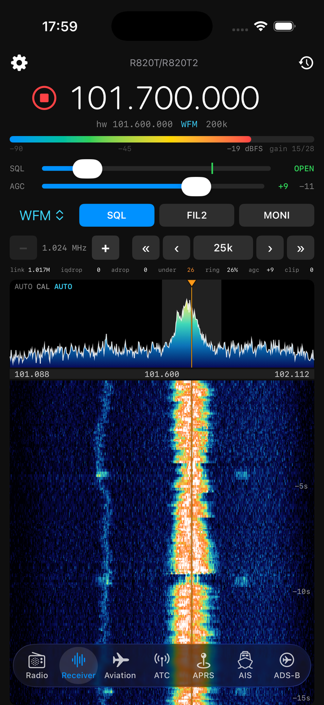
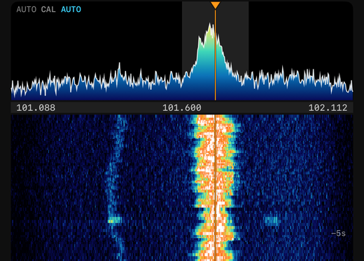
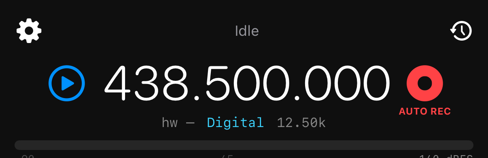

Receiver 接收机
这是 App 里的“万能”页面：想听哪个频率就调到哪个频率，用瀑布图找信号。其它页面都是为某一类信号专门做的，这一页什么都能收。

三步上手
- 输入频率点一下大号的频率数字，在弹出的 Tune 页面里输入以 MHz 为单位的频率，比如
101.7，点 Go。 - 选解调方式点左边蓝色的方式名（WFM、NFM、AM…），在菜单里选一个。不知道选什么时看下面的对照表。
- 点播放频率左边的圆形按钮。瀑布图开始滚动后，看到亮的竖条就是信号，直接点它就会调过去。
页面上的东西

大号数字是正在收听的频率，点它可以直接输入。下面一行小字：hw 是接收机硬件实际停在的频率（App 会故意让它偏开一点，避开接收机中心的杂散），后面是解调方式和通带宽度。

当前接收到的信号强弱，单位 dBFS（0 是满刻度）。右边的 gain 15/28 是接收机当前的增益档位，App 会自动调节：信号太强时降低，太弱时升高，不用手动管。

SQL：没人说话时把沙沙声关掉。滑块上的小竖线是当前实测的噪声水平，把滑块拖到它右边一点就行；右边显示 OPEN（有信号，出声）或 shut（没信号，静音）。AGC：自动把声音放大到滑块设定的响度，右边的数字是实际加了多少增益。
左边选解调方式。按钮亮着表示开启：SQL 静噪开关；FIL1 / 2 / 3 通带宽度（窄 / 标准 / 宽），点一下轮换；MONI 强制打开静噪，听一下弱信号；NCH 滤掉接收机自身产生的固定啸叫；NR 降噪，能压低底噪，但声音会略微发空。后两个在 WFM 下不显示，因为它们是为语音设计的。
左边 − + 缩放瀑布图的显示范围，中间的数字是当前能看到的宽度。右边 ‹ › 移动一个步进，« » 移动十个步进，中间的数字是步进大小，点它可以改（航空用 25k，FM 广播用 100k）。
出问题时看这里。link 实际收到的采样率；iqdrop 手机来不及处理而丢掉的样本，应为 0；under 扬声器等不到声音的次数；ring 音频缓冲占用。详见连不上怎么办。

上面是此刻的频谱，下面的瀑布图记录了过去十几秒，越往下越早。中间的竖线和灰色区域是正在收听的频率和通带。这一块可以直接用手指操作，见下一节。
在瀑布图上操作
| 手势 | 效果 |
|---|---|
| 点一下 | 调到点的那个频率。看到哪里有信号就点哪里，这是最快的调谐方式。 |
| 左右拖动 | 连续调谐，画面跟着手指走。 |
| 上下拖动 | 调整瀑布图的明暗。信号都挤在一种颜色里看不清时，拖一下让底噪变暗、信号变亮。 |
| 左上角 AUTO | 让 App 自动调整明暗。 |
| 左上角 CAL | 按当前的底噪重新定一次明暗，然后保持不变。 |
瀑布图比耳朵快。找一个不知道在哪的信号时，先把显示范围调宽，看哪里间歇地出现亮条，再点过去听。
解调方式怎么选
| 方式 | 用来收什么 | 典型频率 |
|---|---|---|
| WFM | FM 广播 | 87.5–108 MHz |
| NFM | 对讲机、业余无线电、海事、铁路等窄带调频通话 | 136–174 MHz、400–470 MHz |
| AM | 航空管制通话 | 118–137 MHz |
| USB / LSB | 业余无线电和短波的单边带语音 | 144 MHz 附近的弱信号段等 |
| CW | 莫尔斯电码 | 各业余波段的低端 |
| Digital | D-STAR、System Fusion（YSF）和 DMR 数字语音，自动识别 | 业余波段的 D-STAR、C4FM、DMR 频率和中继 |
NFM 和 Digital 会自动互相切换。像八重洲车台的 AMS 一样：在同一个频率上，来了 D-STAR、YSF 或 DMR 数字信号，按钮自动变成 Digital，播放数字语音并弹出卡片；数字信号结束，按钮变回 NFM，模拟调频通话照常播放。所以选这两个中的哪一个都可以，不需要事先知道对方用的是什么制式。没人说话时的底噪靠 SQL 挡住。
选错了方式不会损坏任何东西，只是听起来不对：调频信号用 AM 听是很小的失真声，AM 信号用 NFM 听是沙沙声。换一个试试就知道了。
D-STAR 数字语音
把方式选成 Digital 并调到 D-STAR 的频率，就能听到数字语音，看到对方的呼号、留言、位置，还能收图片；收到的通联都记在右上角时钟图标的 RX History 里。这部分内容比较多，单独写了一篇：D-STAR 数字语音 →。八重洲的 System Fusion 和 DMR 也在同一个方式里接收：YSF 数字语音 →、DMR 数字语音 →
设置里和这一页有关的项
| 设置项 | 作用 |
|---|---|
| Sample rate | 采样率，决定瀑布图一次能看到多宽。1.024 MSPS 对网络要求低，适合日常用；2.4 MSPS 能看到 2.4 MHz 宽，适合找信号，但需要更好的 Wi-Fi。 |
| Waterfall | Station：正在听的频率始终在画面中间。Whole band：画面固定显示接收机收到的整段频谱，标记在上面移动。 |
| Crystal error | 频率校准，在接收机的编辑页里，见在 App 里连接。 |
这一页还是“监视器”
当别的页面（比如 ADS-B 或 AIS）正在使用接收机时，切到 Receiver 页面可以看到它们那个频段的瀑布图，例如 ADS-B 运行时这里显示 1090 MHz。这时页面顶部会写明是哪个页面在用。想自己用，直接点播放，另一个页面会自动停下。
常见情况
| 现象 | 原因和办法 |
|---|---|
| 有信号的亮条，但没有声音 | 静噪关着：把 SQL 滑块往左拖，或者点 MONI 强制打开。 |
| 一直有沙沙声 | 静噪开得太低：把 SQL 滑块拖到那条小竖线的右边。 |
| 语音里有持续的尖锐啸叫 | 接收机自身的杂散落在了通带里：确认 NCH 是亮的。 |
| 声音太小 | 把 AGC 滑块往右拖。它只放大不压缩，本身已经很响的广播不会再变响。 |
| 电台在瀑布图上，但偏离中线 | 频率没校准，见频率校准。 |
| 调到 24 MHz 以下没有信号 | RTL-SDR 的调谐范围大约是 24–1766 MHz，中波和短波需要另外的上变频器或支持直采的型号。 |
录音

频率数字右边的圆点就是录音按钮，在不同方式下作用不同：
| 方式 | 按钮 | 怎么录 |
|---|---|---|
| NFM / Digital | 红色实心圆，下面写 AUTO REC | 自动录：静噪每打开一次（有人按下发射），就录成 RX History 里的一条。短于半秒的毛刺不录；10 秒内静噪开开关关 4 次以上（静噪设得太低在抖），会暂停录音，等它安静下来再恢复。自动录音默认关闭，点一下打开，再点关掉。 |
| WFM | 空心圆 | 手动录：广播电台从不停播，没法按“一次发射”切分，所以播放时点一下开始录，再点一下停止。录的是立体声。 |
只有打开了 SQL 才会自动录——静噪关着时听到的是一直不停的底噪，那不是一次发射。数字语音（D-STAR、YSF、DMR）本来就单独记录，带着呼号，所以不会再录成一条模拟录音。
录音占用的空间在设置的 Recording 一栏里设上限（默认 2 GB），超过后从最旧的记录开始删，数字记录也算在内。